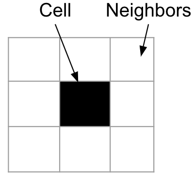
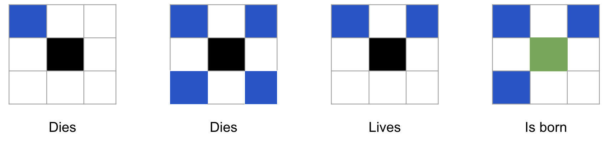
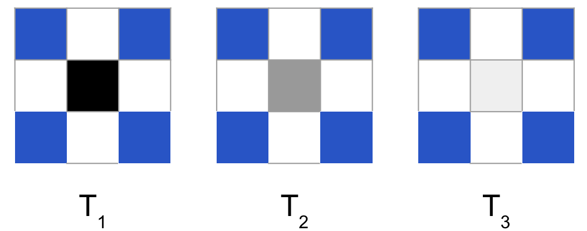
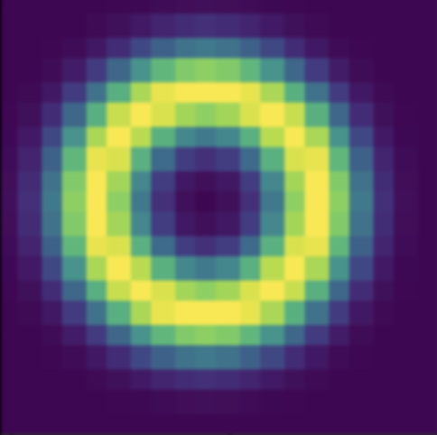
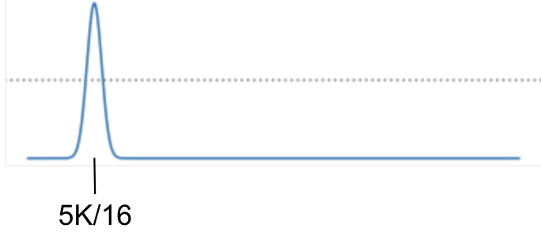
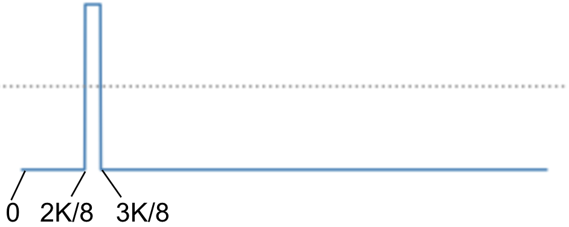

CAS Final Project: Evolving Flow-Lenia for Movement
Chris Egersdoerfer
Introduction
Cellular Automata (CA) are a class of mathematical models that are used to simulate complex systems.
They are made up of a grid of cells, each of which can be in one of a finite number of states.
The state of each cell is updated at each time step according to a set of rules that determine how the state of a cell depends on the states of its neighbors.
Cellular automata are used to model a wide range of systems, including physical systems, biological systems, and social systems.
They are also used in computer science and artificial intelligence to model computation and to solve optimization problems.
CA are an example of a complex adaptive system (CAS) due to their ability to exhibit complex behavior that emerges from the interactions of simple components, exemplifying the principles of emergence and self-organization.
Even in their most primitive form, CA can exhibit highly complex behavior, as demonstrated by Conway's Game of Life.
Conway's Game of Life
Conway's Game of Life is a two-dimensional cellular automaton that was invented by the British mathematician John Conway in 1970.
It is one of the most well-known examples of a cellular automaton and has been studied extensively by mathematicians, computer scientists, and other researchers.
The Game of Life is played on an infinite two-dimensional grid of square cells, each of which can be in one of two states: alive or dead.
The state of each cell is updated at each time step according to a set of rules that determine how the state of a cell depends on the states of its eight neighbors.
The rules are simple and deterministic, but they can give rise to highly complex and unpredictable behavior.
The Game of Life is Turing complete, which means that it can simulate any computer program, given a large enough grid and enough time.
The Game of Life has been used to study a wide range of topics, including the behavior of complex systems, the nature of life and intelligence, and the limits of computation.

Cell depicted with its immediate neighbors
Rules
1. Any live cell with fewer than two live neighbors dies, as if by underpopulation.
2. Any live cell with two or three live neighbors lives on to the next generation.
3. Any live cell with more than three live neighbors dies, as if by overpopulation.
4. Any dead cell with exactly three live neighbors becomes a live cell, as if by reproduction.

Rules of Conway's Game of Life
Example of a stable pattern (in this case a glider) in Conway's Game of Life
While certain initial conditions in Conway's Game of Life lead to complex and highly organized or unorganized behavior, its primitive implementation leaves room for significant expansion.
Expansion 1: Continuous Cell State
The first expansion to Conway's Game of Life is to allow for continuous cell states. More specifically, instead of having cells be either alive or dead, we can allow them to be in a continuous range of states in the range [0, 1].
For example, as represented in the diagram below, a cell might decrease its value by some value less than 1 at each time step if it's neighbors are all in a certain range of values.

Cell state decaying over time
Expansion 2: Continuous Neighbourhood
The second expansion to Conway's Game of Life is to allow for continuous neighborhoods. Instead of having cells interact with their immediate neighbors, we can allow them to interact with a continuous range of cells in their vicinity.
For example, as represented in the diagram below, a cell might consider a larger grid of surrounding cells before updating its own state.
 Cell considering a larger neighborhood
Cell considering a larger neighborhood
Expansion 3: Weighted Neighborhood
The third expansion to Conway's Game of Life is to allow for weighted neighborhoods.
More specifically, instead of directly summing the value of all neighboring cells and normalizing the result, we define a kernel that assigns weights to each cell in the neighborhood.
For example, as represented in the diagram below, a cell might assign a higher weight to cells that are in some ring around it.

Kernel function assigning weights to cells in a ring around the cell
Expansion 4: Continuous Rules
The fourth expansion to Conway's Game of Life is to allow for continuous rules.
Instead of having a discrete function defining the rules that determine how the state of a cell depends on the states of its neighbors, we can allow the rules to be a continuous function.
For example, as represented in the diagram below, a cell might update its state based on a gaussian bump function where the y value of the function is the update value which is added to the cell's current state and the x value is the weighted sum calculated from the kernel described in the previous expansion.

Gaussian bump function used to update cell state.

Discrete function used to update cell state for comparison
Lenia
Once we have expanded Conway's Game of Life to include continuous cell states, continuous neighborhoods, weighted neighborhoods, and continuous rules, we arrive at a system that is known as Lenia.
What is immediately evident is that, due to the continuous nature of the system and its components, the behavior of Lenia seems more organic and fluid than that of Conway's Game of Life.
In some many cases even, the behavior of Lenia resembles biological life at the cellular level.
Lenia behavior resembling cellular life
Lenia behavior resembling a glider similar to the one previously shown in Conway's Game of Life
However, even with the expanded capabilities of Lenia, the system still exhibits one key limitation. Specifically, the system is unstable meaning that most initial conditions will lead to the system either dying out or exploding.
Formal Notation
Before venturing to the final expansion which is to be applied to the system, it is helpful to formalize the previous expansions in mathematical terms. For this we can define the calculation for each cell at time \(t\) as a function \(U_{i}^{t} = K * A_{i}^{t}\)
where \(A_{i}^{t}\) is the state of cells neighboring some cell \(i\) at time \(t\), \(K\) is the kernel function that assigns weights to cells in the neighborhood, and \(U^{t}\) is known as the potential field of the cell at time \(t\).
The update for a cell at position \(i\) is then given by \(A_{i}^{t+1} = G(U_{i}^{t})\) where \(G\) is the growth function that updates the state of the cell based on the potential field. In a more general form, the update for the entire Lenia system can be written as:
\(A^{t+\Delta t} = \left[ A^{t} + \Delta t G(K * A^{t}) \right]_0^1\) where \(\Delta t\) is the time step and \([x]_0^1\) denotes the bounds of the state space to be between 0 and 1.
Expansion 5: Mass Conservation
To address the instability of Lenia, one further expansion is added to the system, targeting mass conservation. Intuitively, in cellular automata systems, mass can be thought of as the sum of states of all cells in the system.
In this way, mass conservation can be thought of as the principle that the total mass of the system should remain constant over time, which is in line with biological systems in the real world, where mass must also be conserved.
To achieve this, particles are introduced to the system and the state \(A_{i}^{t}\) no longer considers the state of neighboring cells but rather the distance of particles to the cell in question, which is then used to calculate the potential field as \(U^{t} = \sum_i K(\| \mathbf{x} - \mathbf{p}_i^t \|)\) where \(\mathbf{p}_i^t\) is the position of particle \(i\) at time \(t\).
To calculate the update for the cell, the growth function is kept the same as before, but using the new particle-based potential field calculation as input. However, to keep in line with mass conservation, the value calculated by the growth function determines the attractive force that the cell exerts on the particles in the system. So as to limit the dense clustering of particles in a single cell, each particle is also given a fixed repulsion force which is applied in a gaussian distribution surrounding its position .
Particle Lenia in action. The black dots represent the particles which remain fixed in amount. The green represents areas of dominant attractive force while the red represents areas of dominant repulsive force. White areas represent cells where the growth is 0
Flow-Lenia
As a result of all the expansions made to the system, we arrive at a system that is known as Flow-Lenia . Flow-Lenia is a system that is capable of exhibiting complex behavior that is both organic and fluid, resembling biological life at the cellular level.
The system is also stable due to the mass conservation principle that was introduced in the final expansion. This stability allows for the ability to explore the parameter space of the system and to observe the behavior of the system under different conditions without the need for filtering out explosive or dying out behavior which is noted as a key issue in other work .
Evolutionary Algorithms
To learn the initial conditions that lead to the emergence of specific behaviors in Flow-Lenia, evolutionary algorithms can be used. Evolutionary algorithms are a class of optimization algorithms that learn to achieve a goal by iteratively improving a population of candidate solutions.
In the context of Flow-Lenia, evolutionary algorithms can be used to learn the system parameters that lead to the emergence of specific behaviors, such as movement or self-organization. By evolving the parameters of the system, we can explore the parameter space of Flow-Lenia and discover the conditions that give rise to interesting and complex behavior.
The specific parameters that can be evolved include the following:
-
Kernel function \(K_i(x) = \sum_{j=1}^{k} b_{i,j} \exp \left( -\frac{ \left( \frac{x}{r_i R} - a_{i,j} \right)^2 }{2 \omega_{i,j}^2} \right)\) where \(b_{i,j}\) is the weight of the \(j\)th gaussian bump, \(a_{i,j}\) is the center of the \(j\)th gaussian bump, \(r_i\) is the radius of the \(i\)th cell, \(R\) is the radius of the kernel, and \(\omega_{i,j}\) is the width of the \(j\)th gaussian bump. The individual parameters \(b_{i,j}\), \(a_{i,j}\), and \(\omega_{i,j}\) can be evolved while the function itself remains fixed.
Kernel function visualization. click the Desmos logo in the bottom right to edit the parameters.
-
Growth function \(G_i(x) = 2 \exp \left( -\frac{(\mu_i - x)^2}{2\sigma_i^2} \right) - 1\) where \(\mu_i\) is the mean of the gaussian bump, \(\sigma_i\) is the standard deviation of the gaussian bump, and the individual parameters \(\mu_i\) and \(\sigma_i\) can be evolved while the function itself remains fixed. \( \sum_{j=1}^N a_j \). Note also, that the -1 is used to ensure that the growth function is bounded between -1 and 1.
Growth function visualization. click the Desmos logo in the bottom right to edit the parameters.
The dynamics of the system itself, such as the number of particles, the repulsion force of the particles, and the time step, are kept fixed during the evolution process.
The evolutionary algorithm works by sampling parameters from a distribution, evaluating the fitness of each parameter set, and updating the distribution based on the fitness of the samples. The specific algorithm used for this project is the Open AI Evolution Strategies (Open ES) algorithm, which is a black-box optimization algorithm that is well-suited for high-dimensional optimization problems .
Notably, the Open ES algorithm does not require the computation of gradients, making it suitable for optimizing complex and non-differentiable functions. Also, while the setup seems similar to that of reinforcement learning algorithms, the key difference lies in the fact that reinforcement learning algorithms directly learn the policy that maps states to actions, while evolutionary algorithms learn a distribution to sample the parameters of the policy.
The implementation of the algorithm is done in Jax using the evosax library, which provides a simple and scalable interface for running evolutionary algorithms in Jax .
Learning to Move
To demonstrate the capabilities of Flow-Lenia in combination with the mentioned evolutionary algorithm, the evolutionary algorithm was tasked with learning the system parameters which lead to movement.
Specifically, the algorithm learns to maximize a fitness function that is defined as the distance traveled by the center of mass of the particles in the system over a fixed time interval.
The approach was set up as follows:
-
Initialize an empty 256 x 256 grid of cells
-
Initialize a 40 x 40 grid to define the initial state and total mass of the system
-
Initialize the kernel function and growth function with random parameters
-
Run the evolutionary algorithm for 1500 generations with a population size of 16
-
Visualize the best parameter set every 50 generations
Fitness Function Tuning
There are a number of factors which seem to have a large impact on the learning process. The most important of these surround the implementation of the fitness function. In the initial attempts to learn movement, the fitness function calculated a normalized distance traveled by the center of mass of the particles in the system over a fixed time interval. However, the small increments in fitness due to normalization made it difficult for the evolutionary algorithm to learn the correct parameters.
To address this, the fitness function was changed to calculate the total distance traveled by the center of mass of the particles in the system over a fixed time interval. This change allowed for larger increments in fitness, which in turn made it easier for the evolutionary algorithm to learn the correct parameters.
For comparison, the initial attempts using a normalized fitness function are shown in the video below, where it seems that the system enforces some dispersion of mass rather than directed motion. The final results after changing the fitness function are shown in the results section.
Results
The results of the evolutionary algorithm are shown in the videos below. The initial stages show interesting behavior and form but do not exhibit significant movement. However, as the generations progress, the system learns to move in a coordinated manner.